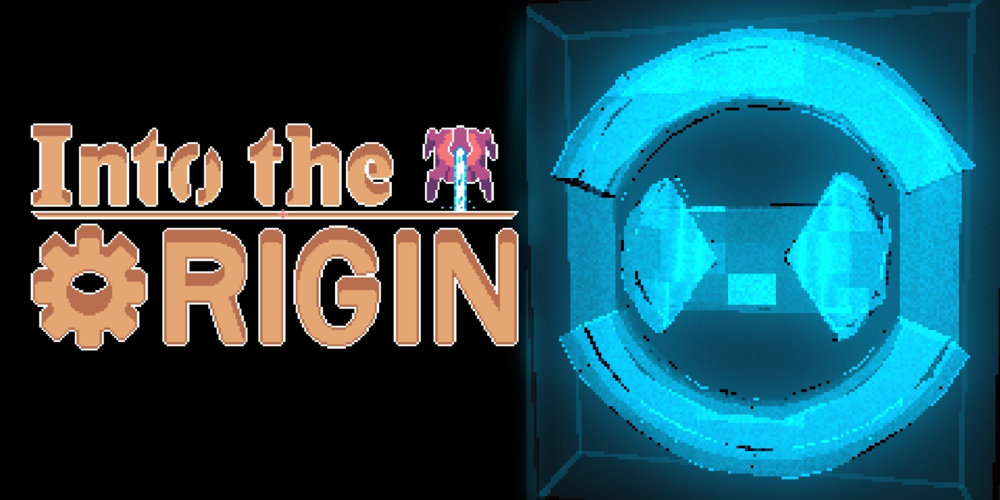

We began working on the game around a week ago. After OGPC released the theme - journeys - we came up with a dungeon-crawler type of game. We have granted it the name of Infectisium, reminiscent of the mysterious alloy which has infected the world through a mysterious void. We plan to evoke emotions through the setting of a ruined world, using multiple types of apocalypses to show the player everything about this world through a story integrated with the gameplay.
We have made major progress on the game since our last post. Not only did we devise a plan to have the player use lasers to kill enemies, and the enemies to use lasers to kill the player, but we finished the lore for the game. LASER Industries discovered a place, underground. They were able to make many innovations in the realm of laser technology using samples obtained in the Void, and expanded to supply nigh all of the world’s power. Unfortunately, an illness broke out in the laboratory, suspected to have originated in the Void. However, when the world government attempted to destroy this plague upon the planet, the robots used to protect the facility went rogue, with their directive to protect the Void at all cost. Anyways, the gameplay is looking great so far. We have found that our school has something of a recording studio we can use, so we intend to have dialogue.
Many apologies about the lack of update, friendos! We were very busy with our new members. We now have a dedicated playtester, not to mention a proper musician, and even a second artist. We also acquired a domain name under our team’s name: The Boolean Brothers. The team also thought the project name was dreadful, so we changed it (perhaps unwisely) to Into the Origin. Contrary to my opinions, this may be more marketable, and I can’t change it back now, anyways.
The game is almost finished! Thanks to all the support we have gotten, we have been able to solve all of the problems we have encountered. The competition is in a mere three weeks, and we hope to have Into the Origin fully completed by then. We also added online saving and a leaderboard through googles’ Firebase service. We needed more to the game, so we added EXPLOSIONS. When you dash into what we call a pylon, it explodes, damaging all nearby enemies. The boss fight is finished as well, and we are very satisfied with it. Without proper communication and contact between all of our team members, we never would have been able to make so grand a game. Looking back on this project, I’m so glad I decided to undertake such an ambitious project. However, I will be very glad when it is over. This will likely be our last blog post, we hope to see you at the competition.